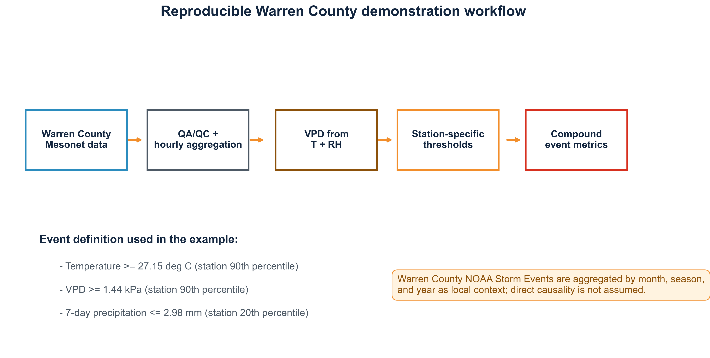

MS Thesis | NSF EPSCoR CLIMBS
CLIMATOLOGY AND FUTURE PROJECTION OF MESOSCALE SEVERE-STORM ENVIRONMENTS IN THE OHIO RIVER BASIN
Climatology and Future Projection of Mesoscale Severe-Storm Environments in the Ohio River Basin Derived from ERA5 and A Downscaled CMIP6.

Numerical Weather Prediction
WRF Simulation of Central Appalachian Flood Event
WRF/WPS simulation and verification of the July 26-27, 2022 Central Appalachian flood event using ERA5 and NOAA Stage IV precipitation.

Hydroclimatology Manuscript
Kentucky Mesonet vs NOAA Atlas 14 Hydroclimatology Analysis
A Comparison of Atlas 14 to Precipitation Frequency Statistics Derived from the Kentucky Mesonet.

Climate Extremes | Ghana
Historical Heatwave Analysis in Ghana
Historical Analysis of Heatwaves Prevalence, Frequency, Duration and Intensity in Ghana, based on the SSRN preprint and local heatwave abstract materials.

Climate Data Science
Compound Heat-Dryness Extremes
Observational, station-based workflow for compound heat-dryness detection using Kentucky Mesonet hourly data, VPD, and percentile thresholds.